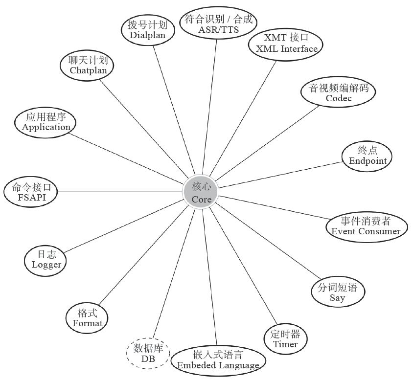

5.1 总体架构
总的来说，FreeSWITCH由一个稳定的核心（Core）及一些外围模块组成。这些外围的模块根据其功能和用途的不同又分为Endpoint、Codec、Dialplan、Application等不同的类别，如图5-1所示。其中，数据库的代码是在核心中实现的，图5-1中之所以将核心单独列出来只是因为从逻辑上看它是独立的 [1] 。
FreeSWITCH内部使用线程模型来处理并发请求，每个连接都在单独的线程中进行处理，不同的线程间通过Mutex互斥访问共享资源，并通过消息和异步事件等方式进行通信。这种架构能处理很高的并发，并且在多核环境中运算能均匀地分布到多颗CPU或单CPU的多个核心上。FreeSWITCH的核心非常短小精悍，这也是其保持稳定的关键。绝大部分应用层的功能都在外围的模块中实现。外围模块是可以动态加载（以及卸载）的，在实际应用中可以只加载用到的模块。外围模块通过核心提供的Public API与核心进行通信，而核心则通过回调（或称钩子）机制执行外围模块中的代码。
5.1.1 核心
FreeSWITCH的核心是Core，它包含了关键的数据结构和复杂的代码、状态机、数据库等，这些代码只出现在核心中，并保持了最大限度的抽象和重用。外围模块只能通过核心代码提供的公共应用程序接口（Public API）调用核心的功能，因而核心运行在一个受保护的环境中，核心代码都是经过了精心编写和严格测试的，最大限度地保证了系统整体的稳定。

图5-1 FreeSWITCH架构示意图
核心代码保持了最高程度的抽象，因而它可以调用不同功能、不同协议的模块。同时，实现良好的API也使得编写不同的外围模块非常容易。
1.数据库（DB）
FreeSWITCH的核心除了使用内部的队列、哈希表存储数据外，也使用外部的关系型数据库存储数据。使用外部数据库的好处是查询数据不用锁定内存数据结构，这不仅能提高性能，还能降低死锁的风险，保证了系统稳定。命令show calls、show channels等都可直接从数据库中读取内容并显示。
FreeSWITCH支持多种流行的关系型数据库。为了尽量减少对其他系统的依赖，FreeSWITCH默认使用的数据库类型是SQLite。SQLite是一种嵌入式数据库，FreeSWITCH可以直接调用它提供的库函数来访问数据。由于SQLite会进行读锁定，因此在使用SQLite时不建议通过外部应用直接读取核心数据库 [2] 。
除SQLite外，系统也支持通过使用ODBC [3] 方式连接其他数据库，如PostgreSQL、MySQL等（有的人也成功地使用ODBC方式连接到Oracle及MS SQL Server等，但可能需要改动一些代码）。由于PostgreSQL、MySQL等都是Client/Server的结构，允许多个客户端连接查询，因此外部程序可以直接查询数据库，获取当前分机的注册状态及通话状态等。
另外，FreeSWITCH内部也提供了一个对PostgreSQL数据库的原生支持。它可以通过PostgreSQL提供的客户端库直接访问PostgreSQL服务，减少了中间的ODBC环节。
FreeSWITCH使用一个核心的数据库（默认的存放位置是/usr/local/freeswitch/db/core.db）来记录系统的接口（interfaces）、任务（tasks）以及当前的通道（channels）、通话（calls）等实时数据。某些模块，如mod_sofia、mod_fifo等，都有自己的数据库（表），一般来说，这些模块也提供相关的API用于从这些表里查询数据。必要时，用户也可以直接查询这些数据库（表）来获取数据（如mod_sofia中的分机注册数据等）。
系统对数据库操作做了优化，在高并发状态下，核心会尽量将几百条SQL语句一起执行，这可以大大提高系统性能。
2.公共应用程序接口（Public API）
FreeSWITCH在核心层实现了一些Public API。这些Public API可以被外围的模块调用。例如，当FreeSWITCH外围的Endpoint模块收到一个呼入请求时，该模块就可以调用核心的switch_core_session_request函数为该呼叫生成一个新的Session，此后，该呼叫的生命周期就由该Session管理。如果呼叫挂断，就调用switch_core_session_destroy函数将该Session释放。
一般来说，与Session相关的函数都是与呼叫相关的。进一步细分，我们可以认为它主要与信令层相关，因为一个呼叫的生命周期是由信令来控制的。为了便于理解，接下来我们再举一个媒体层的例子。我们在1.5节中讲到，在SIP通话中，实际的语音、视频数据是使用RTP协议传输的（在这里为了简单起见我们只讨论语音）。为了在通话中使通话双方能彼此听到对方的声音，需要在已经建立的Session的基础上再增加一个RTP的Session，通过它进行RTP媒体流的收发等。使用switch_rtp_new函数可以建立一个新的RTP Session，在挂断电话前，可以使用switch_rtp_destroy来释放它。
核心的代码是任何模块都可以调用的，所以不同的Endpoint模块都可以调用核心中与Session相关的函数，以创建或释放一个Session，以及创建或释放相关的媒体流。当然，除了Session、RTP等与呼叫相关的函数外，核心中还有一些通用的工具函数，如生成JSON格式的函数、通用字符串处理函数、与通用数据数据结构相关的函数等。这些工具函数提供统一的接口，这方便开发外围模块，也有助于统一代码的风格，利于修改和维护。关于这些函数我们将在第20章讲解FreeSWITCH代码导读时再详细分析，在此就不多费笔墨了。
3.接口（Interface）
FreeSWITCH在核心中除实现了大量的Public API供外围模块调用外，还提供了很多抽象的接口，如图5-1中所示的Endpoint、Codec等。这些接口对同类型的逻辑或功能实体进行了抽象，但没有具体实现。具体的实现一般由外围的模块负责，核心层通过回调（钩子）方式调用具体的实现代码或函数 [4] 。
FreeSWITCH核心层定义了以下接口（来自switch_types.h，注释为作者所加）：
typedef enum {
SWITCH_ENDPOINT_INTERFACE, //
终点
SWITCH_TIMER_INTERFACE, //
定时器
SWITCH_DIALPLAN_INTERFACE, //
拨号计划
SWITCH_CODEC_INTERFACE, //
编解码
SWITCH_APPLICATION_INTERFACE, //
应用程序
SWITCH_API_INTERFACE, //
命令
SWITCH_FILE_INTERFACE, //
文件
SWITCH_SPEECH_INTERFACE, //
语音合成
SWITCH_DIRECTORY_INTERFACE, //
用户目录
SWITCH_CHAT_INTERFACE, //
聊天计划
SWITCH_SAY_INTERFACE, //
分词短语
SWITCH_ASR_INTERFACE, //
语音识别
SWITCH_MANAGEMENT_INTERFACE, //
网管接口
SWITCH_LIMIT_INTERFACE, //
资源限制接口
SWITCH_CHAT_APPLICATION_INTERFACE //
聊天应用程序接口
} switch_module_interface_name_t;
具体的，外围模块可以选择实现其中一个或多个接口，并向核心层“注册”这些接口。核心层在需要这些接口时，会回调在这些接口中约定的回调函数。举例来说，在SIP通话中，如果核心需要取音频数据，它会调用mod_sofia中的相关回调函数，最后mod_sofia将调用核心中与RTP相关的函数，以便从RTP媒体流中取得数据；而在mod_portaudio中，音频数据是从本地声卡中获得的。也就是说，在上层应用中，我们可能只需读取一段音频数据，而不必关心该音频是怎么产生的或从哪里来的。在此，上层应用可以调用核心中的switch_core_session_read_frame函数以便从相关的Session中取得一“帧”音频数据，但该数据具体是从RTP流中还是本地声卡中取得，是由具体的Endpoint决定的，上层应用不知道也不关心它到底是怎么来的。
通过这种方式，在上层屏蔽了下层实现方式的细节，保证了上层实现接口的简单和稳定。同时，很容易通过这种机制扩展其他类型的模块，进而支持越来越多的协议、功能和特性。
4.事件（Event）
除了使用Public API及接口回调方式执行内部逻辑和通信外，FreeSWITCH在内部也使用消息和事件机制进行进程间和模块间通信。消息机制完全是内部的，在此我们就不多讲了。事件机制既可在内部使用，也可在外部使用。当FreeSWITCH内部状态发生变化或收到一些新的消息时，会产生（Fire）一些事件。事件机制是一种“生产者–消费者”模型。事件的产生和处理（生产和消费）是异步的，是一种松耦合的关系。这些事件可以在FreeSWITCH内部通过绑定（Bind）一定的回调函数进行捕获，即FreeSWITCH的核心事件系统会依次回调这些回调函数，完成相应的功能。另外，在嵌入式脚本（如Lua）中也可以订阅相关的事件并进行处理。
在FreeSWITCH外部，也可以通过Event Socket等接口订阅相关的事件，通过这种方式可了解FreeSWITCH内部发生了什么，如当前呼叫的状态等。fs_cli就是一个典型的外部程序，它通过Event Socket与FreeSWITCH通信，可以对FreeSWITCH进行控制和管理，也可以订阅相关的事件对FreeSWITCH的运行情况进行监控。订阅事件最简单的方法是：
fs_cli> /event plain ALL
在fs_cli中执行上述命令可以订阅所有的事件。FreeSWITCH的事件主要有两大类：一类是主事件，可根据事件的名字（Event-Name）来区分，如CHANNEL_ANSWER（应答）、CHANNEL_HANGUP（挂机）等；另一类是自定义事件，它们的Event-Name永远是CUSTOM，不同的事件类型可根据子类型（Event-Subclass）来区分，如sofia::register（SIP注册）、sofia::unregister（SIP注销）等。
在fs_cli中可以单独订阅某类事件，如：
fs_cli> /event plain CHANNEL_ANSWER
fs_cli> /event plain CUSTOM sofia::register
在此，读者对事件有一个简单的了解就可以了，我们将在后面的章节中更详细地讨论事件机制、函数及相关用法。
5.1.2 接口实现
从上一节中我们了解到，接口都是抽象的，其中只有少量在核心中有具体实现（如PCM编解码的实现），大部分最终由外部的模块来实现。与接口的抽象概念相比，我们更关注具体实现。因此，在本节中我们把接口和模块结合在一起来讲。由于接口和模块的分类及源代码结构并不总是一一对应的，因此我们在这里不关注这些概念的不同点，而专注于它们的共同点。下面我们简单介绍一下这些不接口以及相关的模块：
·终点（Endpoint） 。Endpoint是终结FreeSWITCH的地方，也就是说再往外走就超出FreeSWITCH的控制了。它主要包含了不同呼叫控制协议的接口，如SIP、TDM硬件、H323以及Google Talk等。这使得FreeSWITCH可以与众多不同的电话系统进行通信。例如，可以使用mod_skypopen与Skype网络进行通信。另外，我们在3.4节也讲过，它还可以通过mod_portaudio驱动本地声卡，用作一个软电话。
·拨号计划（Dialplan） 。Dialplan主要提供查找电话路由功能。系统默认的Dialplan由mod_dialplan_xml提供，它是以XML描述的。除此之外，FreeSWITCH也支持Asterisk风格的配置文件以及ENUM查询等。
·聊天计划（Chatplan） 。类似于Dialplan，不同的是Chatplan主要对文本消息进行路由，如SIP SIMPLE、Skype Message、XMPP Message等。它是在mod_sms中实现的。
·应用程序（Application，APP） 。FreeSWITCH提供了许多App使复杂的任务变得异常简单，如mod_voicemail模块可以很简单地实现语音留言；而mod_conference模块则可以实现高质量的多方会议。我们在本书中多次提到FreeSWITCH本身是一个B2BUA，而实际上所有与FreeSWITCH的通话（或通过FreeSWITCH的通话）都是在与一个或多个App在交互。mod_dptools模块提供了系统中大部分的App。
·命令接口（FSAPI） [5] 。FSAPI简称API，它是一种对外的命令接口，它的原理非常简单─输入一个简单的字符串（以空格分隔），该字符串由模块的内部函数处理，然后得到一个输出。输出可以是一个简单的字符串、一大串文本、XML或JSON文本。通过使用FSAPI，一个模块可以通过命令字符串的方式调用另一个模块提供的功能，而不用连接其他模块的函数（或代码，实际上FreeSWITCH不鼓励也不支持模块间互相连接）。它实际上是一种高度抽象的输入/输出机制，不仅在模块内部，在FreeSWITCH外部也可能通过Event Socket（第3章所说的fs_cli就是用这种方式）或XML-RPC等进行调用。系统中大部分的API都是由mod_commands模块提供的，有的模块实现了一些与本模块相关的API。
·XML接口（XML Interface） 。XML接口支持多种获取XML的方式，它可以从本地的配置文件或数据库中读取，甚至可以从一个能动态返回XML的远程HTTP服务器中读取。对XML的解析和访问是在核心中实现的，但对XML的应用和扩展都是在外部模块中完成的，如mod_xml_rpc、mod_xml_curl、mod_xml_cdr等。
·编解码器（Codec） 。FreeSWITCH支持最广泛的Codec，除了大多数VoIP系统支持的G711、G722、G729、GSM外，它还支持iLBC、BV16/32、SILK、iSAC、CELT、OPUS等。它可以同时桥接不同采样频率的电话以及电话会议等。G711（即PCM）编解码是在核心中实现的，其他的编解码一般都由独立的模块实现，如mod_ilbc实现了iLBC编解码。
·语音识别及语音合成（ASR/TTS） 。支持语音自动识别（ASR）及文本/语音转换（TTS）。可以通过本地模块实现（如mod_flite），也可以通过MRCP协议与其他语音产品对接（如mod_unimrcp）实现。
·格式、文件接口（Format，File Interface） 。支持不同格式的声音文件回放、录音，如WAV、MP3等。mod_sndfile模块通过libsndfile库提供了对大部分音频文件格式的支持。MP3格式是在mod_shout中实现的。
·日志（Logger） 。日志可以写到控制台、日志文件、系统日志（syslog）以及远程的日志服务器。实现日志功能的模块有mod_console、mod_logfile、mod_syslog等。
·定时器（Timer） 。实时的话音通话需要非常准确的定时器。在FreeSWITCH中，可以使用软时钟（soft timer）或内核提供的时钟来定时（如Linux中的timerfd或posix timer）。值得一提的是，FreeSWITCH最理想的工作时钟频率是1000Hz，而某些Linux发行版或虚拟机的内核的默认时钟可能是100Hz或250Hz，在这种情况下，可以使用内核提供的时钟接口，或者可以重新编译内核调整时钟频率。
·嵌入式语言（Embeded Language） 。通过swig可支持多种嵌入式语言进而控制呼叫流程，如Lua、Javascript、Perl等。
·事件套接字（Event Socket） 。通过Event Socket可以使用任何其他语言（只要支持Socket），通过TCP Socket可控制呼叫流程、扩展FreeSWITCH的功能。
[1] 除此之外，核心也实现了一些逻辑上应该在外部模块中实现的接口，如编解码接口中的PCMU和PCMA。
[2] 如果使用了ODBC连接其他数据库如PostgreSQL及MySQL时，则又建议直接读取数据库的内容获取信息。
[3] 如果在UNIX类系统上使用ODBC，则需要安装UnixODBC，并进行正确的配置（我们将在本书第二部分详细讲解ODBC的配置和使用）。如果要编译安装，还需要开发包unixodbc-devel（CentOS）或unixodbc-dev（Debian/Ubuntu）。
[4] 可以想象为面向对象的语言中的基类或纯虚函数，我们将在本书的第三部分深入剖析。
[5] 即FreeSWITCH API，它在FreeSWITCH内部是使用switch_api_interface_t类型实现的，即它实现的是FreeSWITCH的命令行接口。在后面要讲到的嵌入式语言及ESL中也使用API（如mod_lua中的freeswitch.API及ESL中的api命令）。注意，不要将这里的API与常见的应用程序接口（Application Programming Interface）混淆。参见4.6节。